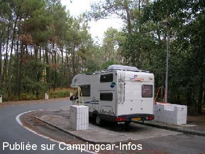

AA = Aire de services sur autoroute de :
A62 Bordeaux=>Toulouse Terres de Graves
(N° 29)
Accès/adresse :
A62 Bordeaux=>Toulouse
Aire des Terres de Graves
33720 SAINT MICHEL DE RIEUFRET
Aire des Terres de Graves
33720 SAINT MICHEL DE RIEUFRET
Latitude : (Nord) 44.64403° Décimaux ou 44° 38′ 38′′
Longitude : (Ouest) -0.43803° Décimaux ou 0° 26′ 16′′
Tarif : Gratuit
Type de borne : Artisanale
Services :


Station-services
Petite alimentation
Poubelles
Autres informations :
2 tuyaux d'eau bien distincts pour l'eau potable et le rinçage des cassettes

Le 24/08/2005 par PetCyr
de
Xtian74
le 15/06/2009 :
Coordonnées GPS contrôlées et rectifiées (à préciser car à notre passage, la pluie tombait trop fort pour relever sur place).
Coordonnées GPS contrôlées et rectifiées (à préciser car à notre passage, la pluie tombait trop fort pour relever sur place).
de
le 03/09/2006 :
Dans le sens Bordeaux vers Toulouse, 1ère aire située après la prise de ticket, pas de pictogramme qui l'indique sur l'autoroute.
Cette aire ombragée, assez en retrait de l'autoroute avec quelques places de stationnement peut permettre de passer une nuit de repos correct.
Dans le sens Bordeaux vers Toulouse, 1ère aire située après la prise de ticket, pas de pictogramme qui l'indique sur l'autoroute.
Cette aire ombragée, assez en retrait de l'autoroute avec quelques places de stationnement peut permettre de passer une nuit de repos correct.
de
Céline VIREPINTE
le 03/09/2006 :
C'est juste après le péage de Saint-Selve.
C'est juste après le péage de Saint-Selve.
de
PetCyr
le 24/08/2005 :
Le seul panneau indiquant l'aire de services est à la sortie de l'aire d'autoroute sur la voie d'accélération!
Le seul panneau indiquant l'aire de services est à la sortie de l'aire d'autoroute sur la voie d'accélération!